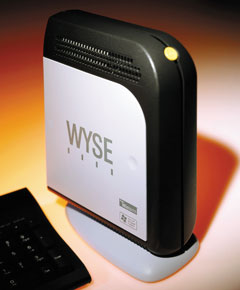
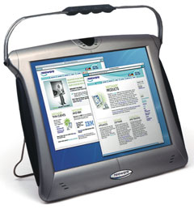

Олег Спиряев
Постоянное увеличение числа приложений, их неуклонно возрастающие требования к вычислительным ресурсам приводят к частой модернизации оборудования и периодической замене ряда компонентов. Это увеличивает как стоимость самого оборудования, так и дополнительные расходы на его поддержку - иными словами, совокупную стоимость владения компьютерной системой.
Сегодня компании и организации выбирают оборудование, руководствуясь требованиями к непрерывности работы, безопасности, эргономичности и стоимости. Такие технические моменты, как тактовая частота процессора и объем памяти, уже не играют столь важной роли, как раньше. Этот сдвиг приоритетов означает, что популярность так называемых тонких клиентов может значительно вырасти, поскольку они обеспечивают невысокую стоимость владения благодаря низкому энергопотреблению и компактности, а также поддерживают централизованное управление и функции обеспечения непрерывности работы. Немаловажно и то, что в основе концепции тонких клиентов лежит безопасность.
Модель стоимости владенияСовокупная стоимость владения компьютерной системой, TCO (Total Cost of Ownership), включает затраты на приобретение компьютерного оборудования и поддержание его в рабочем состоянии, а также финансовые потери, обусловленные сбоями в его работе. Еще в 1994 г. Gartner Group опубликовала результаты своих исследований, которые буквально шокировали мир бизнеса. Оказалось, что основная цена технологии составляет лишь четверть от реальной. Общая стоимость владения для полностью загруженного ПК оказалась на уровне чуть ли не 10 тыс. долл.! Так, приобретенный еще два года назад ПК сегодня уже не способен выполнять (вообще или за приемлемое время) новые версии приложений, выпускаемых производителями ПО; следовательно, его приходится модернизировать. Стоимость же модернизации часто составляет до половины стоимости нового ПК. Кроме того, возникают проблемы с модернизацией сетевого оборудования по причине его неспособности удовлетворить по пропускной способности как клиент-серверные, так и обычные сетевые приложения. По разным оценкам, его стоимость составляет до одной трети от стоимости ПК и серверов, используемых на предприятии. В соответствии с предложенной Gartner Group моделью общей стоимости владения TCO, цена компьютерных активов на протяжении их срока службы складывается из четырех слагаемых:
|
Наиболее общее определение тонкого клиента таково: это клиентское устройство (или программа), передающее большую часть исполняемых им функций серверу. Но, к примеру, корпорация Microsoft (http://www.microsoft.com) ввела собственную классификацию тонких клиентов, разделив их на три категории. Базовый терминал (Basic Terminal) имеет наименьшую функциональность и может использоваться вместо старых алфавитно-цифровых терминалов. Для него рекомендуется ОС Windows CE .NET. Интернет-терминал (Browser Terminal) в основном предназначается для доступа к ресурсам Web, а от простейшего терминала его отличает Windows-подобный пользовательский интерфейс. Для него рекомендуются такие ОС, как Windows CE .NET или Windows XP Embedded. И наконец, бизнес-терминал (Line-of-Business Terminal, LOB) дает возможность локально выполнять некоторое ограниченное число функций. Для него рекомендуется ОС Windows XP Embedded.
Вообще говоря, система, в которой работают тонкие клиенты, состоит из трех основных компонентов: собственно клиента, сервера и коммуникационных средств, связывающих клиента и сервер. Обычно в качестве клиентов используются Windows-терминалы, портативные устройства, сетевые компьютеры и различные Java-устройства (например, Sun Ray). Основной принцип состоит в том, что тонкий клиент представляет собой лишь устройство отображения и ввода данных.
Почему именно тонкие клиенты
На стороне компаний, обративших свои взоры на технологию тонких клиентов, экономическая эффективность, безопасность и простота администрирования. По прогнозам аналитиков IDC, в ближайшие годы объем продаж тонких клиентов будет увеличиваться на 22,8% ежегодно и к 2007 г. достигнет 3,4 млн шт. Тем не менее эти цифры существенно уступают тем, которые фигурировали в прошлых прогнозах. Однако поводы для оптимизма все-таки есть.
Одна из основных тенденций, характерных для настоящего времени, - централизация администрирования. Среди ее проявлений - многозвенные программные системы, использующие серверы приложений, разнообразные подходы к виртуализации, консолидация и многое другое. Другая причина возрождения интереса к тонким клиентам заключается в появлении мобильных клиентов. Несмотря на продолжающуюся миниатюризацию жестких дисков, желательно, чтобы устройства такого рода были вообще бездисковыми. И наконец, еще одна причина заключается в том, что использование "толстого" клиента в качестве устройства для оперирования данными предприятия увеличивает непродуктивный трафик в корпоративной сети, а сокращение трафика сегодня особенно актуально в связи с распространением беспроводных устройств.
Под тонким клиентом обычно понимают устройство без жестких дисков и флоппи-дисководов, чья вычислительная мощность и объем памяти определяются задачами пользователя. В сетях тонких клиентов все вычисления выполняются на сервере, что знаменует возврат к централизации; при этом, разумеется, резко снижаются требования к пользовательским устройствам. Приложения и данные, хранящиеся на сервере, становятся доступными для пользователя при включении его устройства и выполнении процедуры регистрации на сервере. Современные тонкие клиенты считаются закрытыми системами только в том смысле, что у них нет приводов для сменных носителей и разъемов расширения. Все необходимое оборудование подключается обычно через порты USB.
Архитектуры с тонкими клиентами позволяют сократить затраты двумя способами: во-первых, за счет уменьшения расходов на аппаратное обеспечение (например, вследствие отказа от жестких дисков на клиентских машинах); во-вторых, за счет снижения затрат на администрирование сети на базе ПК. Стратегия с использованием тонких клиентов превращает рабочую станцию в современный эквивалент терминала, в результате потенциальных источников сбоя в сети становится меньше.
Несмотря на появление разнообразных средств системного управления ПК, многим ИТ-администраторам по-прежнему приходится прилагать немалые усилия для своевременного обновления ПО и для поддержания его надежной работы. Немало пользователей ПК оказываются абсолютно беспомощными, сталкиваясь со сбоями в работе, и поэтому предъявляют повышенные требования к надежности приложений. В такой ситуации именно хорошо управляемая информационная система на базе тонких клиентов всегда считалась оптимальным решением в силу своей надежности, безопасности и предсказуемости, аналогичной мэйнфреймам. Технология тонких клиентов позволяет системным администраторам развертывать, поддерживать приложения и управлять ими с одного рабочего места, тратя на это считанные минуты.
Кроме того, тонкие клиенты обеспечивают производительность, сравнимую с производительностью локальной сети, даже в случае низкоскоростных линий. Дело в том, что приложения не перекачиваются по сети и не запускаются на пользовательском компьютере, а обмен с сервером данными о нажатии клавиш, движениях мыши и обновлениях дисплея происходит очень эффективно. Благодаря этому администраторы информационных систем могут обеспечить пользователям высокий уровень производительности.
Тонкие клиенты лучше всего использовать для работы с традиционными офисными приложениями. Их можно легко задействовать и в качестве терминала базового компьютера, что довольно актуально для средних и крупных предприятий. А вот для решения задач, требующих значительных системных ресурсов, например, автоматизированного проектирования, разработки и отладки ПО, такого рода замена совершенно неэффективна. Кроме того, технология тонких клиентов предоставляет доступ к приложениям Windows NT для пользователей, которые хотели бы использовать данную ОС на рабочем месте, но не имеют такой возможности из-за расходов на обновление аппаратного обеспечения и сетевой инфраструктуры.
Стоит особо отметить, что в сетях тонких клиентов реализуется необходимый уровень безопасности. При включении устройства на сервере происходят аутентификация и регистрация абонента. Кроме того, на основе анализа персонального IP-адреса, который играет роль идентификатора пользователя, определяется его принадлежность к той или иной виртуальной частной сети (VPN). Как правило, сети тонких клиентов закрыты, их соединение с магистральной сетью происходит только через прокси-сервер.
Кроме того, технология тонких клиентов повышает защищенность информации, так как данные не загружаются по сети на пользовательский компьютер. Эта технология также упрощает репликацию данных и обеспечивает всем пользователям доступ к одной и той же централизованной информации. Это означает, что затраты на поддержание распределенных баз данных можно сократить, увеличив при этом их надежность.
Citrix и Microsoft
Все началось с того, что компания Citrix Systems (http://www.citrix.com) превратила Windows NT в операционную систему для поддержки тонких клиентов. Получив лицензию на Windows NT Server 3.51, Citrix стала продавать WinFrame - многопользовательскую версию, доступ к которой осуществлялся со специальных терминалов. Первые клиенты - так называемые терминалы на базе Windows (Windows-based Terminal, WBT) - благодаря поддержке эмуляции смогли заменить имеющиеся "неинтеллектуальные терминалы" при подключении к большим и мини-компьютерам.
WinFrame оказалась надежным, масштабируемым решением, позволяющим запускать приложения Windows на защищенном сервере Windows NT Server. Удаленный клиент взаимодействовал с сервером с помощью собственной независимой архитектуры вычислений Citrix (Independent Computing Architecture, ICA). Использование протокола Citrix ICA имело огромное значение, поскольку он позволял поддерживать практически любые клиенты, в том числе унаследованные системы. В частности, протокол ICA расширял возможности клиентской части, позволяя, например, подключать устройства, непосредственно подсоединенные к параллельным и последовательным портам компьютера-клиента.
Клиент-серверная архитектура, реализованная в WinFrame, отличалась хорошей гибкостью. Приложения работали на сервере WinFrame изолированно друг от друга, но могли совместно использовать память и другие вычислительные ресурсы. Как уже отмечалось, каждое приложение могло обращаться к диску или принтеру как на сервере, так и на клиентском устройстве. WinFrame поддерживал многопроцессорные системы, а также кластерные системы с помощью ПО выравнивания нагрузки. ПО WinFrame могло работать в любой сети, где применялись поддерживаемые Windows NT протоколы, в том числе TCP/IP, NetBIOS, IPX и SPX, а также прямые последовательные соединения. К примеру, сервер WinFrame мог функционировать в сети Novell IntranetWare с протоколом IPX.
Microsoft, однако, отказалась предоставить Citrix лицензию на исходный код Windows NT 4.0 и объявила о разработке своей собственной конкурирующей многопользовательской архитектуры. Фактически же она купила у компании Insignia Solutions программный продукт NTRIGUE, который обеспечивал удаленный доступ к Windows, и включила его в состав Windows NT 4.0. В результате тонкие клиенты могли взаимодействовать с сервером, на котором работало ПО Windows Terminal Server. Microsoft решила не лицензировать у Citrix протокол независимой вычислительной архитектуры ICA, а создать для взаимодействия клиента и сервера свой собственный протокол удаленной настольной системы (Remote Desktop Protocol, RDP). Вообще говоря, оба протокола предусматривают передачу только сведений об обновлениях экрана, перемещениях мыши, нажатиях клавиш и т. п., оставляя все вычисления серверу. Оба могут реализовываться по любому соединению, где поддерживается протокол IP, в том числе по коммутируемым каналам.
Итак, поддержка тонких клиентов началась с ОС Microsoft Windows NT Server 4.0. Доступная в ее составе редакция Terminal Server Edition поддерживает в числе прочего и тонкие клиенты, обеспечивая выполнение приложений с настольных устройств разных типов, включая специализированные Windows-терминалы, рабочие места на ПК, на которых установлена 32-разрядная ОС Windows 95 и выше, рабочие места под управлением 16-разрядной ОС Windows 3.11.
ПО Windows NT Server 4.0 Terminal Server Edition состояло из трех основных компонентов. Во-первых, это терминальный сервер - ядро, которое обеспечивало выполнение нескольких клиентских сеансов одновременно. Стандартные Windows-приложения не требовалось модернизировать для работы под управлением терминального сервера. Во-вторых, это протокол доступа с удаленной настольной машины - ключевой компонент, обеспечивающий взаимодействие между терминальным сервером и тонким клиентом. По замыслу, RDP унаследовал стандартный протокол ITU T.120, ранее использовавшийся в продукте для проведения онлайновых конференций Microsoft NetMeeting. И третья составляющая - это сами тонкие клиенты, Windows-терминалы и ПК. Все эти компоненты обеспечивали выполнение приложений на сервере и их распределение между клиентами. Приложение выполнялось на сервере "от лица" клиента.
Между тем Citrix Systems выпустила усовершенствованную редакцию WinFrame, названную MetaFrame. Ее терминальные сервисы расширяют возможности соответствующих сервисов Windows Terminal Services. Архитектура и протокол ICA, на которых основана MetaFrame, обеспечивают доступ к клиентским устройствам, использующим Windows или построенным на других принципах, без дополнительных изменений в ПО. В MetaFrame включены инструментальные средства, обеспечивающие простоту развертывания и администрирования, что в конечном счете облегчает масштабирование системы в соответствии с требованиями пользователей. Программа Neighborhood, входящая в состав MetaFrame, дает системному администратору возможность передавать приложения отдельным пользователям и их группам. Предназначенная для этого портальная технология позволяет настраивать приложения так, что они выполняются непосредственно в среде Web-браузера. При этом портал можно персонализировать в соответствии со спецификой конкретных пользователей и приложений.
Архитектура ICA - краеугольный камень технической политики Citrix. В нее входят три составляющих: серверное ПО, сетевой протокол и клиентское ПО. Важное преимущество ICA, благодаря которому эту архитектуру можно использовать в качестве расширения Windows 2000/2003 Terminal Server, состоит в возможности отделить логику приложения от пользовательского интерфейса на серверной стороне. Сетевой компонент ICA позволяет "транспортировать" вводимые с клавиатуры символы, перемещения мыши и изменения изображений на экране, занимая полосу пропускания всего в 20 кбит. На клиентской стороне пользователь видит только прикладной интерфейс. Архитектура ICA реализована на системном уровне, поэтому удается добиться эффективности ее использования и значительной компактности полосы пропускания.
Citrix предлагает свое решение в виде программного пакета MetaFrame Access Suite, в который входят презентационный сервер, презентационный сервер для ОС Unix, сервер конференций, менеджер паролей и менеджер безопасности доступа. MetaFrame XP Presentation Server представляет собой программную инфраструктуру, которая обеспечивает доступ к приложениям, размещенным на сервере и работающим под управлением Windows 2000 Server или Windows Server 2003. Эта инфраструктура реализует две основные функции: доступ к приложениям со стороны практически любых устройств и централизованное управление ими. MetaFrame Presentation Server for Unix обеспечивает аналогичные возможности, но только для приложений, работающих в среде Unix, и Java-приложений. С помощью MetaFrame Conferencing Manager команды сотрудников могут координировать свою работу с общими для них приложениями и документами. MetaFrame Password Manager - еще одна инфраструктура, созданная для регламентации доступа по паролям к приложениям, работающим в среде Citrix MetaFrame Access Suite. MetaFrame Secure Access Manager обеспечивает безопасность при доступе с помощью Web-средств.
Перечисленные компоненты Citrix MetaFrame Access Suite поддерживают доступ к корпоративным ресурсам, сохраняя управляемость гетерогенной среды. Иными словами, обеспечивается развертывание приложений под Windows и Unix, управление ими и безопасный доступ к ним. Доступ сотрудников компаний, их партнеров, клиентов и поставщиков может осуществляться через Интернет, экстра- и интрасети, глобальные, локальные и беспроводные сети.
Выход Windows 2000 Server продемонстрировал серьезную заинтересованность Microsoft в поддержке вычислений на базе тонких клиентов. Например, редакции Windows 2000 Advanced Server и Datacenter Server поддерживают теперь функции распределения нагрузки. RDP также претерпел ряд усовершенствований: в частности, в нем появились многоуровневое шифрование, поддержка локальных принтеров, перенаправление содержимого буфера вырезанного изображения и клиентов браузера на базе ActiveX. Кроме того, Microsoft добавила полезную функцию Client Connection Manager - с ее помощью администраторы могут создавать на клиентских рабочих столах пиктограммы, путем нажатия на которые можно устанавливать соединения с одним или более серверами, где выполняется Windows Terminal Server. Стоит отметить, что если в качестве терминала используются обычные ПК (например, морально устаревшие), на них локально должна быть установлена ОС. В комплект поставки Windows 2000 Server входят клиенты для Microsoft Windows 3.x/9x/2000. Для поддержки других операционных систем - DOS, Mac OS, Unix - необходима установка на сервер Windows 2000 пакета MetaFrame.
Основной серверной ОС, поддерживающей терминальные сервисы, на сегодня стала Windows Server 2003. Ее отличает прежде всего новая программа соединения с клиентом под названием Remote Desktop Connection (RDC), которая впервые появилась в Windows XP. Предоставляемый RDC интерфейс проще, но эффективнее. Эту программу можно использовать для подключения настольных компьютеров, работающих под управлением Windows XP Professional, и для подключения к более ранним версиям TSE в составе Windows NT 4.0 и Windows 2000 Server. В RDC используется новая версия протокола RDP и новая модель лицензирования.
ОС Windows Server 2003 выпускается в четырех вариантах: Web, Standard, Enterprise и Datacenter. Эти варианты различаются между собой по функциональным возможностям, связанным с поддержкой терминальных сервисов. Наибольшими возможностями обладает Server 2003 Datacenter, а наименьшими - Server 2003 Web. Редакция Datacenter, предназначенная для наиболее крупных серверов, поддерживает от 8 до 32 процессоров. Помимо этого есть еще две 64-разрядные разновидности редакций Enterprise и Datacenter, созданные в расчете на процессор Intel Itanium для работы с большими СУБД и в крупных транзакционных системах.
Citrix Systems добавила свой новый продукт на основе Web к линии продуктов, включающей MetaFrame и WinFrame. ПО NFuse способно работать через протоколы ICA либо RDP. Клиент NFuse поддерживает браузеры Netscape Navigator и Microsoft Internet Explorer, а также клиент Java. Кроме того, MetaFrame и NFuse имеют версии для Unix, что обеспечивает им дополнительные преимущества. Поскольку NFuse используется вместе с MetaFrame, он обеспечивает многие возможности в области защиты и масштабирования, которыми обладает MetaFrame. Сюда входят шифрование со 128-разрядным ключом и система регистрации, хранящая имя и пароль пользователя (вместо того, чтобы многократно пересылать их через сетевые соединения или сохранять в Web-браузере). По умолчанию при подключении к системе NFuse пользователь должен самостоятельно загрузить клиент и установить его, хотя сам процесс инсталляции и не требует вмешательства пользователя. Компания Citrix сообщила, что в новых версиях своего продукта собирается упростить процесс инсталляции. Кроме того, сами пользователи могут модифицировать его таким образом, чтобы загрузка выполнялась автоматически. Считается, что с точки зрения пользователя из продуктов наиболее удобен клиент Java, поскольку он обеспечивает самые "гладкие" установку и подключение.
В Citrix NFuse имеется ряд интересных способов адаптации к потребностям заказчика. Он обеспечивает интеграцию с порталом Corporate Yahoo Portal, благодаря чему возможен доступ к приложениям через Web-узел интрасети, использующий приложение Yahoo Portal. Компания Citrix подписала также соглашения со многими другими разработчиками порталов, в частности, с Brio Technology, Epicentric, Plumtree Software и TopTier Software, чтобы они включили в свои продукты ее ПО NFuse и технологию портала.
В основу продукта Microsoft TSAC (Terminal Services Advanced Client) положен компонент ActiveX, напрямую взаимодействующий с Terminal Server. Этот клиент представляет собой бесплатное решение "под ключ", однако и у него есть недостатки. Один из них заключается, например, в том, что в TSAC нет ни Java-компонента, ни поддержки браузера Navigator - иными словами, он может работать только с Internet Explorer. К достоинствам же TSAC относится то, что его можно получить бесплатно, купив Windows Terminal Server. Продукт TSAC содержит три компонента. Помимо работающего через Web компонента ActiveX, в него входит модуль расширения для Microsoft Management Console, который позволяет поддерживать несколько серверов Terminal Servers и соединений, и новый локальный клиент для Terminal Server, использующий шифрование со 128-разрядным ключом.
Windows-терминалы
Идею терминального сервиса в среде Microsoft Windows первой реализовала компания Wyse Technology (http://www.wyse.com), которая в середине 1990-х годов выпустила первый в мире Windows-терминал Winterm. До настоящего времени именно эта компания контролирует большую часть рынка подобных устройств. Кроме нее, сегодня на рынке Windows-терминалов работают такие известные компании, как Neoware, HP, Fujitsu Siemens.
|  | Современный Windows-терминал Winterm.
|
Новые тонкие клиенты Fujitsu SiemensЛетом этого года компания Fujitsu Siemens Computers (http://www.fujitsu-siemens.com) расширила линейку своих тонких клиентов за счет новых устройств Futro серии S. Они занимают на рабочем столе не больше места, чем среднего размера книга (24,6x4,8x17,7 см), и построены на базе процессоров Transmeta. Это означает, что, несмотря на мощные графические возможности, для их работы требуется только 25 Вт мощности, т. е. на 80% меньше, чем потребляют обычные ПК. Устройства Futro серии S предназначены в основном для ввода данных, отправки запросов в централизованную базу данных, работы с электронной почтой и офисными приложениями. |
Тонкий клиент существенно отличается от обычных терминалов хотя бы тем, что предлагает такой же графический интерфейс, что и ПК. Однако, обладая всеми преимуществами терминалов, тонкий клиент не имеет присущих ПК недостатков. Консолидированный подход к хранению системного ПО, пользовательских приложений и данных на сервере значительно снизил требования к аппаратной части тонкого клиента (чем и объясняется их название).
Конструктивно тонкий клиент может быть выполнен в виде моноблока в компактном корпусе либо встроенного в монитор интегрального решения; в последние годы появился также планшетный вариант исполнения. Производители часто предлагают модели, в которых системный блок интегрирован в традиционный монитор либо ЖК-панель. Поскольку все данные и основной объем вычислений перенесены на сторону сервера, тонкий клиент не предъявляет высоких требований к мощности процессора и не нуждается в большом объеме памяти. Это позволило в классическом исполнении отказаться не только от жестких дисков, но и от других накопителей. В итоге в большинстве моделей отсутствует внутренний блок питания, а следовательно, отпала и необходимость в установке внутренних вентиляторов - при оптимальном размере корпуса пассивного охлаждения вполне достаточно. По причине отсутствия механических движущихся частей устройство почти не производит шума и более надежно в работе (чем меньше компонентов, тем ниже вероятность выхода какого-то из них из строя). Такие устройства обычно относят к категории "необслуживаемых", поскольку время наработки на отказ у них многократно увеличивается (по некоторым данным, этот показатель у тонких клиентов превышает аналогичный для ПК в 3-4 раза). Кроме того, тонкие клиенты лучше подходят для работы в агрессивных средах с повышенной температурой и запыленностью.
|  | Моноблочный Windows-терминал.
|
Перезаписываемая флэш-память, имеющаяся у всех тонких клиентов, служит обычно для установки клиентской версии ОС (Windows CE, Windows CE .NET, Windows XP Embedded, Linux) и поддержки основных протоколов передачи данных (RDP, ICA, X11, Telnet, DHCP, TCP/IP). Исключение составляют тонкие клиенты Sun Ray компании Sun Microsystems (http://www.sun.com) - на них не устанавливается ни ОС, ни клиентское ПО.
Отсутствие накопителей не позволяет установить несанкционированное ПО либо скопировать информацию из системы на внешние носители. Однако на практике, идя навстречу пожеланиям заказчиков, производители обеспечивают поддержку внешних устройств; поставляемые драйверы для них также записываются во флэш-память.
Производители предлагают тонкие клиенты в самых различных конфигурациях, обеспечивающих ту или иную функциональность. Некоторые из терминалов не имеют почти никакого аппаратного обеспечения, тогда как другие оснащаются даже стереофоническими устройствами для воспроизведения аудио и видео, а также оперативной памятью объемом до 256 Мбайт. Кроме того, устройства различаются по своему внешнему виду, эмулируемым терминалам и т. п. Они имеют встроенную ОС, причем некоторые производители используют свои собственные специальные ОС (например, Wyse OS), совместимые с RDP и ICA, другие же предлагают версии на базе Linux. Большинство Windows-терминалов поддерживают разрешающую способность экрана на уровне 1024х768 или 1280х1024 при частоте вертикальной развертки 75 или 85 Гц. Для сетевого соединения обычно используется 10/100Base-T; как опция, возможно беспроводное соединение. Что же касается процессоров, на базе которых строятся терминалы, то здесь упор делается на обычную продукцию корпораций Intel, AMD, Via и Transmeta.
Процессоры AMD GeodeКорпорация AMD (http://www.amd.com) объявила о введении нового рейтинга "производительность-энергопотребление" (Performance-Power Rating, PPR), который призван подчеркнуть важность баланса между двумя этими характеристиками встраиваемых процессоров класса x86. Ожидается, что это решение позволит ускорить оценку выпускаемых продуктов. Одновременно с введением нового рейтинга корпорация объявила о выпуске новой линейки высокопроизводительных процессоров AMD Geode с низким энергопотреблением. Выпуск семейства AMD Geode Solutions - часть стратегии AMD, направленной на то, чтобы стать единственным изготовителем процессоров, предлагающим все необходимое для создания x86-решений для встраиваемых систем с низким энергопотреблением и самых быстродействующих серверных платформ. Портфель процессоров AMD позволяет инженерам-конструкторам создавать широкий спектр решений, используя уже имеющуюся солидную базу ПО для платформы x86 и опираясь на преимущества высокопроизводительных решений с низким энергопотреблением. Процессоры AMD Geode GX с архитектурой GeodeLink демонстрируют высокую системную производительность при пониженных уровнях тактовой частоты. Для обозначения моделей процессоров AMD Geode корпорация будет использовать номера, соответствующие результатам тестирования на эталонных пакетах компании Synchromesh Computing. В новой системе нумерации моделей AMD Geode Solutions используется показатель относительной производительности процессора, после которого указывается характеристика питания. Тем самым, помимо относительной производительности, номера моделей позволяют идентифицировать уровень потребления энергии, когда этот фактор играет существенную роль. Например, процессор AMD Geode GX2 получит обозначение AMD Geode GX 533@1.1W.
Заказчики, которым предлагаются встраиваемые решения класса x86 с уровнем мощности в диапазоне от менее 1 Вт до 14 Вт, имеют возможность выбрать процессор, в наибольшей степени отвечающий их индивидуальным потребностям. Высокопроизводительные процессоры с низким энергопотреблением могут использоваться в различных продуктах - компьютерах с одной платой, мобильных устройствах на платформе Windows XP, торговых терминалах, информационных и транзакционных киосках, в телекоммуникационном и сетевом оборудовании. |
Например, корпорация Wyse предлагает три линейки оборудования (Simple, Powerful и Flexible), включающие полтора десятка устройств, причем все они поддерживают протоколы ICA и RDP. Во всех моделях Wyse Technology имеется встроенный эмулятор терминалов. Эта особенность расширяет сферу применения терминалов Winterm, поскольку многие организации, переходя от многопользовательского режима и текстовых терминалов к тонким клиентам, заинтересованы в сохранении прежних приложений.
Wyse плюс AMDКорпорация Wyse Technology объявила о сотрудничестве с корпорацией AMD, цель которого - интеграция процессора AMD Geode GX 533@1.1W в новейшие линейки тонких клиентов Wyse Winterm на базе системы Linux. Беря на вооружение процессор с низким энергопотреблением, Wyse первой предложила тонкие клиенты на базе Linux, которые отличаются улучшенными системными характеристиками при более низкой тактовой частоте и очень компактном форм-факторе. Так, тонкий клиент Wyse Winterm 5150SE, работающий под управлением ОС Wyse Linux V6, представляет собой усовершенствованную систему, устанавливающую новые стандарты производительности и стоимости для настольной среды Linux. |
В заключение можно отметить, что технология тонких клиентов, несомненно, заслуживает особого внимания. Уже сейчас на многих предприятиях возникает потребность в оснащении дополнительных мест для работы со стандартными офисными приложениями, а установка полнофункциональных ПК в ряде случаев нецелесообразна по экономическим, технологическим или организационным причинам.